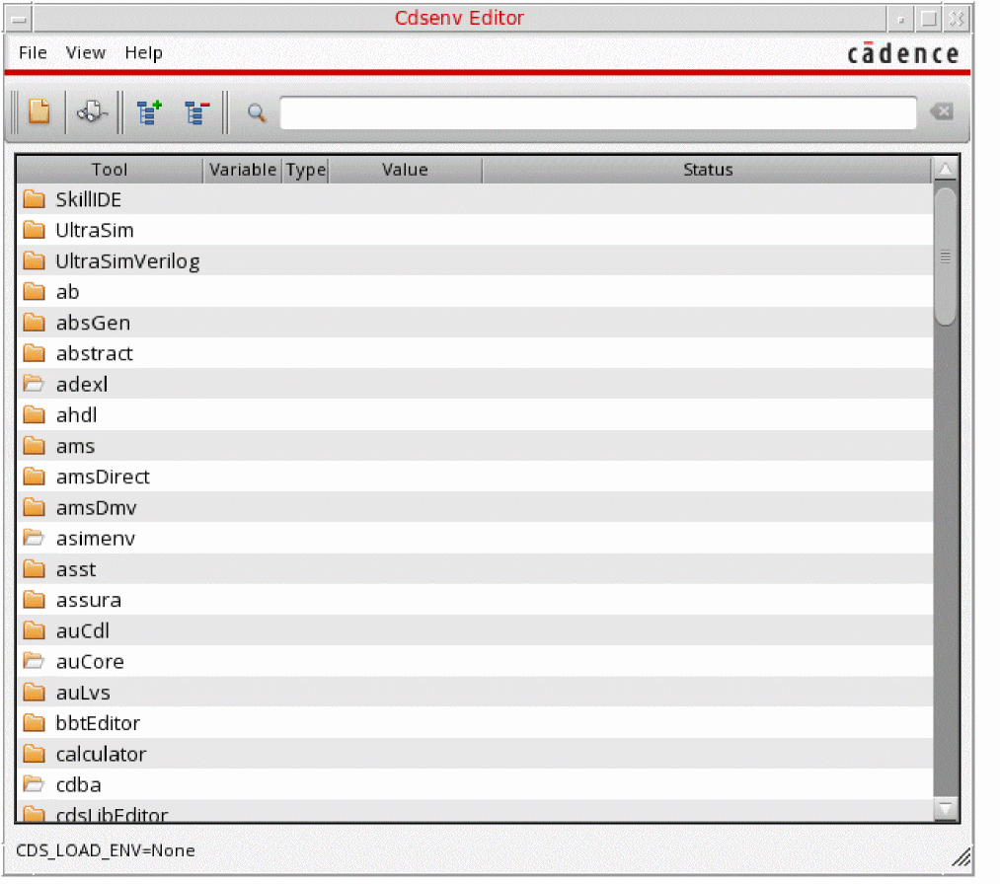
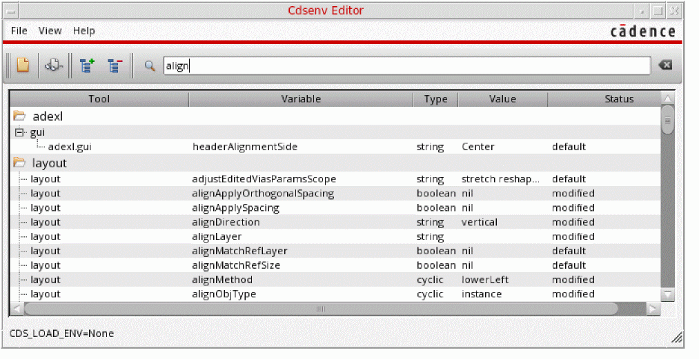

7
Specifying Environment Settings
You can specify environment settings and initialization instructions for Cadence applications in .cdsenv and .cdsinit files, respectively. Using these settings, you can customize your Cadence software environment. Your system administrator can copy a customized version of these files to your local site directory: your_install_dir/tools/dfII/local. You can also maintain local copies in your home directory. Settings in your local files take precedence over all other settings.
Cadence software loads settings in the following order:
-
.Xdefaults -
.cdsenv (environment settings)If you specify
.cdsenvin your csfLookupConfig file, Cadence applications use the Cadence Setup Search File mechanism to find this file.-
your_install_dir
/tools/dfII/etc/tools/binaryName/.cdsenv
This file is present for every application that supports the.cdsenvenvironment-setting mechanism. -
your_install_dir
/tools/dfII/local/.cdsenv
This file is present only if your site administrator copies a customized environment file to this location. -
search order as specified by the CDS_LOAD_ENV environment variable, if set;
otherwise,
~/.cdsenv(see “Copying and Editing the Default .cdsenv File” for more information).If the value ofCDS_LOAD_ENVis set to CSF, then the first directory found insetup.loc(see also Search Mechanism in the Cadence Application Infrastructure User Guide) will be the default directory to which.cdsenvwill be saved.
-
your_install_dir
-
.cdsinit (initialization instructions)If you specify
.cdinitin your csfLookupConfig file, Cadence applications use the Cadence Setup Search File mechanism to find this file.-
your_install_dir
/tools/dfII/local/.cdsinit -
.cdsinitin your current working (project) directory -
~/.cdsinit(see Copying and Editing the Default .cdsinit File)
-
your_install_dir
Cadence provides samples of these files in your installation hierarchy:
your_install_dir/tools/dfII/samples/.cdsenv
your_install_dir/tools/dfII/cdsuser/.cdsinit
Each file has a different format:
-
The
.cdsenvfile contains settings of the form
For more information about thetool[.section]settingtypevalue.cdsenvfile, see the following topics: -
The
.cdsinitfile contains executable commands for custom software initialization (such as bindkey definitions, custom SKILL procedures, and user preferences)
For more information about the.cdsinitfile, see the following topics:
Copying and Editing the Default .cdsinit File
To change your Cadence startup environment, you can create a .cdsinit file in your home or working directory by copying the default file from the cdsuser subdirectory of the Virtuoso Design Environment installation directory as follows:
-
On the input line of the Command Interpreter Window (CIW), type the following command and press Return:
println(getInstallPath())
The directory where the Cadence software is installed appears in the output area. -
In a terminal window, type the following command and press Return:
cd
Your current working directory is your home directory. -
Type the following command and press Return:
cp
where dfII_InstallDir is the directory path returned by the command you typed on the input line of the CIW in step 1 above.dfII_InstallDir/cdsuser/.cdsinit .
Once you have a valid .cdsinit file in your home directory, you can edit the file as follows:
-
Open the
.cdsinitfile with a text editor.
For example, to usevi, type the following command:vi .cdsinit
- Make the changes you want.
-
Save the file and exit the editor.
The program uses these settings the next time you run the software.
To apply these settings to the currently running session, you can load the modified .cdsinit file as follows:
-
On the input line of the CIW, type the following command and press Return:
load("~/.cdsinit")
The command and its result (tfor successful execution) appear in the output area.
Setting the SKILL Search Path
A search path is a list of directories the software searches for various files, libraries, and commands. The SKILL search path, which identifies the location of your SKILL files and commands, must include directories with read-write access. Cadence software looks for SKILL files by searching the directories in the order listed in the SKILL search path.
The default SKILL search path checks for files in the following locations in the order shown:
-
your_install_dir
/tools/dfII/local -
The current directory, represented by a dot (
.) -
Your home directory, represented by a tilde (
~)
To change your SKILL search path, do the followng:
-
Type a list of space-separated paths as arguments to the
setSkillPathcommand in your.cdsinitfile. For example:setSkillPath(". your_install_dir/tools/dfII/local ~/myskill")
This command instructs Cadence software to check the current directory first, then your_install_dir/tools/dfII/local, then themyskillsubdirectory in your home directory.
To add another directory to the end of the current SKILL search path, do the following:
-
Type the
setSkillPathcommand in your.cdsinitfile using the following format:setSkillPath($PATH
This command sets the SKILL path to search the existing path first (the contents of thenewPathsometimesPath)$PATHvariable) and then the additional paths (newPath, then sometimesPath).
Specifying the Editor
You can specify the editor you want to use in Cadence text entry windows. The default editor is vi. For example, to use the emacs editor instead of the vi editor, do the following:
Specifying User Preference Options
You can set various options in your .cdsinit file using the commands in the following table. Some of these options are also on the User Preferences form (see “Specifying User Preferences”).
.cdsinit before any of the ciw-> commands in the table that follows:ciw = hiGetCIWindow()
| To change … | Type this in .cdsinit or on the CIW input line: | |
|---|---|---|
ciw->useScrollbars = {t|nil}
|
||
ciw->infix = {t|nil}
|
||
ciw->expertMode = {t|nil}
|
||
hiSetUndoLimit(
Valid Values: |
||
ciw->nestLimit =
|
||
hiSetMultiClickTime(
|
||
ciw->displayMouseBinding = {t|nil}
|
||
hiSetFont("text" "
Valid Values: Valid hiSetFont("text" "-*-courier-medium-r-*-*-12-*") |
||
ciw->focusToCursor = {t|nil}
|
||
ciw->formPlacement = {
|
||
ciw->formRelativeTo = {
|
||
ciw->optionFormPlacement = {
|
||
ciw->optionFormRelativeTo = {
|
||
ciw->warpPointer = {t|nil}
|
||
ciw->displayMenuBindkeys = {t|nil}
|
||
Specifying Log Filter Options
You can set log filter options by placing the following command in your .cdsinit file:
hiSetFilterOptions( b_inputMenuCommands b_inputPrompts b_outputProgramResults b_outputMenuCommands b_outputUser b_messageErrors b_messageWarnings)
The arguments are defined below.
For example, if you want to see all the information in the output area of the CIW (as seen on the .cdsinit file:
hiSetFilterOptions( t t t t t t t)
To see only output and errors, change the input menu and prompts arguments and the warning message argument to nil:
hiSetFilterOptions( nil nil t t t t nil)
For more information, see “Transcript Session” and hiSetFilterOptions in the Cadence User
Viewing the Font List
To view the list of fonts available on your system, do the following:
You can also view the Set Fonts form to display and edit the current fontType settings by either selecting Options – Fonts from the CIW menu bar, or entering “hiSetFont()” in the CIW entry field:
For more information, including descriptions of the above font type options, see hiSetFont in the Cadence User Interface SKILL Reference.
Setting Fonts using the .cdsinit File
Starting with ICADV12.2, XFonts are no longer supported in the user interface (hi*) functions. XFonts have been replaced by TrueType fonts that improve the general appearance and readability of the user interface.
While TrueType fonts support anti-aliasing, font rendering is controlled using the desktop controls.
GNOME Desktop Environment
If you are using the GNOME desktop environment, you can render the fonts by choosing System – Preferences – Fonts. The Font Preferences dialog box is displayed.
In this dialog box, you can select the Monochrome option to render the fonts using the non-anti-aliased method. To render the fonts using the anti-aliased method, select any of the following options:
- Best shapes
- Best contrast
- Subpixel smoothing (LCDs): It is recommended to use this option for best results.
For best results, you can choose ZRLE.
In RealVNC, the ZRLE preferred encoding option is selected by default.
KDE Desktop Environment
If you are using the KDE desktop environment, you can render the fonts by choosing Appearance & Themes – Fonts from the KDE Control Center window.
Then, click the Configure button to open the Configure Anti-Alias Settings – KDE Control Center dialog box.
To render the fonts using the anti-aliased method, select the Use sub-pixel hinting check box and then, select one of the following options from the Hinting style drop-down list:
- None
- Slight
- Medium
-
Full: It is recommended to use this option for best results.Ensure that the Exclude range check box is not selected. This option blocks anti-aliasing for almost all the commonly used TrueType font sizes.If you customize Virtuoso fonts with settings in the
.cdsinitfile in earlier releases, and want to have similar customizations in ICADVM20.1, you must update your.cdsinitfile to make use of the SKILL constant, 'hicAntiAliasedFontsto identify the TrueType font support, as shown below:if( boundp( 'hicAntiAliasedFonts ) then hiSetFont( "ciw" ?size 14) else hiSetFont( "ciw" "-*-courier-medium-r-*-*-14-" ) )
The above example sets the font size in CIW to 16 pixels (Default: 11). However, if you are using a version earlier than ICADV12.2, the software will run theelseportion of the example and set the font size to 14 pixels. Similarly, you can also change thetextandlabelfonts using the same SKILL constant.
The RENDER extension on the X server is required for proper font rendering and drawing operations. If the current display does not have the RENDER extension, this will result in poor font appearance and sub-optimal drawing performance. The following message to this effect will be displayed when the tool is started:
*Warning* The RENDER extension is missing on display <DISPLAY>.
Enable the RENDER extension on the X server to improve performance and font appearance.
You can use the following command to check if a particular display has the RENDER extension:
xdpyinfo [-d <DISPLAY>] | grep RENDER
$DISPLAY), specify this via the '-d <DISPLAY>' argument to xdpyinfo.
If RENDER is present, this should print RENDER; if it is absent, nothing will be printed.
To resolve this situation, enable the RENDER extension in the X server configuration and restart the X server.
Copying and Editing the Default .cdsenv File
To customize environment settings for Cadence software, you can create a .cdsenv file in your home or working directory by copying the default file from the samples subdirectory of the Virtuoso Design Environment installation directory as follows:
-
On the input line of the Command Interpreter Window (CIW), type the following command and press Return:
println(getInstallPath())
The directory where the software is installed appears in the output area. -
In a terminal window, type the following command and press Return:
cd
Your current working directory is your home directory. -
Type the following command and press Return:
cp
where dfII_InstallDir is the directory path returned by the command you typed on the input line of the CIW in step 1 above.dfII_InstallDir/samples/.cdsenv .
When you have a valid .cdsenv file in your home directory, you can edit the file:
Using the Cdsenv Editor
Cdsenv Editor enables you to search for environment variables across multiple .cdsenv files belonging to different tools. The editor allows you to change values of environment variables and save the changes to the specified file.
To open Cdsenv Editor, in the CIW:
-
Select Options – Cdsenv Editor or run the startCdsenvEditor SKILL function..

The tools with the open folder icon are loaded into Virtuoso and the tools depicted with closed folder icon are tools are not loaded.
The form contains the following options:
Cdsenv Editor Table
The Cdsenv Editor table allows you to navigate to a specific environment variable and update it as needed.
The table comprises the following fields:
- The Tool field is an expandable list of tool names that allows you to navigate and display all environment variables for a tool.
- The Variable field contains the names of the environment variables.
- The Type field specifies the type of environment variables. For example, boolean, string, cyclic, and int.
- The Value field specifies the current value of an environment variable. You can edit the specified value of an environment variable from here. To do this, click on the value of the selected variable and then select or type in the value you want to set.
-
The Status field shows the current status of the variables. If an environment variable has not been edited, the status is displayed as
default. If you change the value of a variable the status changes to modified or modified from default. Modified means the value has been edited but remains the same as default, while modified from default means the value has been changed to a different one from default. - The Loaded From File field is an optional field that shows the file from which the selected .cdsenv file has been loaded. It only shows the path that is not default Cadence installation location.
Editing an Environment Variable in Cdsenv Editor
To edit an environment variable in Cdsenv Editor perform the following steps:
-
Navigate to the environment variable you want to edit in the Cdsenv Editor table or use search to locate it.
 - Click the value field of the selected environment variable and set the new value.
- If you change to a non-default value, status is shown as modified from default, otherwise the status is modified.
To set the value of an environment variable back to its default value, right-click on the variable you want to change and select Set to default value.
If an environment variable value is modified in the Cdsenv Editor, the variable row will be highlighted in blue. However, the color stays black if the value is modified using the SKILL command envSetVal in the CIW. Environment variable values are synced between Virtuoso and the Cdsenv Editor. Value changes using one tool are instantly reflected on the other tool .
Customizing How Updated Environment Variables are Saved
The Save .cdsenv file form allows you to customize how the environment variables you modify using the Cdsenv Editor are saved.
The form contains the following options:
Using a Text Editor
-
Open the
.cdsenvfile with a text editor.
For example, to usevi, type the following command:vi .cdsenv
- Make the changes you want (see “Specifying User Interface Preferences in .cdsenv”).
-
Save your changes and exit the editor.
Your settings will be loaded into the Cadence environment the next time you start the software.
To apply these settings to the currently running session, you can load the .cdsenv file as follows:
-
On the input line of the CIW, type the following command and press Return:
envLoadFile("~/.cdsenv")
The command and its result (tfor successful execution) appear in the output area.
See also Chapter 8, “Saving and Recalling Default Settings.”
Specifying a Search Order for .cdsenv
You can specify a custom search order for .cdsenv by setting the CDS_LOAD_ENV environment variable to one of the following values:
CSF, the CDS_LOAD_ENV setting applies after your_install_dir/tools/dfII/etc/tools/binaryName/.cdsenv and your_install_dir/tools/dfII/local/.cdsenv are loaded.|
Load currentWorkingDirectory |
|
|
Load |
-
The
CDS_LOAD_ENVsetting is not case-sensitive. -
If
CDS_LOAD_ENVis not set or is not set to one of the above values, the default search order is used (see “Specifying Environment Settings”). -
The
CDS_LOAD_ENVsetting determines the default save directory (which appears in the Save To File field on the Save Defaults form) as follows:
Setting Default Save To File currentWorkingDirectory
/.cdsenvif it exists, elseHOME/.cdsenv
Specifying User Interface Preferences in .cdsenv
To find the "User Preference Defaults" section in the file, do the following:
-
Open the .
cdsenvfile in a text editor. For example:vi .cdsenv
-
Find the "User Preference Defaults" sections. For example, in
vitype/;User
The user preference defaults have a format like this:
ui winPlaceStyle boolean nil
- Specifying Window Controls in .cdsenv
- Specifying Command Controls in .cdsenv
- Specifying CIW Controls in .cdsenv
- Specifying Log Filter Options in .cdsenv
- Specifying CIW Color Choices in .cdsenv
Specifying Window Controls in .cdsenv
Once you have copied the default .cdsenv file from the samples directory (see “Copying and Editing the Default .cdsenv File”), you can change the default values of the window controls.
To specify default values for window controls in your .cdsenv file, do the following:
- For each control whose default you want to change, edit its value (see the table below).
- (Optional) Delete settings for those controls whose default values you do not want to change.
- Save and exit the file.
Specifying Command Controls in .cdsenv
Once you have copied the default .cdsenv file from the samples directory (see “Copying and Editing the Default .cdsenv File”), you can change the default values of the command controls.
To specify default values for command controls in your .cdsenv file, do the following:
- For each control whose default you want to change, edit its value (see the table below).
- (Optional) Delete settings for those controls whose default values you do not want to change.
- Save and exit the file.
Specifying CIW Controls in .cdsenv
Once you have copied the default .cdsenv file from the samples directory (see “Copying and Editing the Default .cdsenv File”), you can change the default values of the Command Interpreter Window (CIW) controls.
To specify default values for CIW controls in your .cdsenv file, do the following:
- For each control whose default you want to change, edit its value (see the table below).
- (Optional) Delete settings for those controls whose default values you do not want to change.
- Save and exit the file.
|
|
|
|
Valid values include: |
|
|
Output Area Lines |
|
ciwCmdHistorySize is no longer in use. It is only available for compatibility reasons. Now, the complete history of typed commands is visible at all times.Customizing Titles for Windows and Icons
You can customize the titles for windows and icons in a Virtuoso session in your.cdsenv file as shown below. Currently, there is no GUI option for this environment variable.
Examples
designEditor.window windowNameFormat string "%a %m: %l %c %v %x"
designEditor.window iconNameFormat string "%c"
Specifying Log Filter Options in .cdsenv
Once you have copied the default .cdsenv file from the samples directory (see “Copying and Editing the Default .cdsenv File”), you can change the default values of the log file filter options.
To specify default values for log file filter options in your .cdsenv file, do the following:
- For each control whose default you want to change, edit its value (see the table below).
- (Optional) Delete settings for those controls whose default values you do not want to change.
- Save and exit the file.
| Default Setting | Form Setting |
|---|---|
Specifying CIW Color Choices in .cdsenv
You can specify the colors used in the Command Interpreter Window (CIW) when displaying the following items:
- Error and warning messages that appear in the output area
- Parentheses-matching and command-matching highlighting on the input line
To specify colors used in the CIW, do the following:
-
Add one of the following lines to your
.cdsenvfile for each color you want to specify:-
To specify the color for warning messages that appear in the CIW output area, add
ui ciwWarnColor string "
color" -
To specify the color for error messages that appear in the CIW output area, add
ui ciwErrorColor string "
color" -
To specify the color for parentheses-matching on the input line of the CIW, add
ui ciwMatchParenColor string "
color" -
To specify the color for parentheses-mismatching on the input line of the CIW, add
ui ciwMismatchParenColor string "
color" -
To specify the color for command-matching on the input line of the CIW, add
ui ciwMatchCmdColor string "
color"
-
To specify the color for warning messages that appear in the CIW output area, add
- Save and exit the file.
You can specify a color (color) using either its X color name (such as "orange" or "red") or its encoded RGB name (such as "#dcdcdc" for light gray or "#cce8c3" for light green).
CDS_GRAY_BG environment variable (setenv CDS_GRAY_BG) before starting any tools which use the Cadence style. To switch the gray background off, use unsetenv CDS_GRAY_BG.Specifying Memory Check Intervals in .cdsenv
The following environment variables are used to control the frequency of memory check:
-
ui memoryCheckIntervalSeconds int 1
You can set the memory check interval from 0 through 60. If the memory check interval is set to 0 then there will be no memory checking and if it is set from 1 to 60 then that will be the number of seconds between each check.
Default value is 1. -
ui systemMemoryCheckInterval int 10
You can set the system memory check interval from 1 to 100.
Default value is 10.
The idle memory check is calculated on the basis ofmemoryCheckIntervalSeconds*systemMemoryCheckInterval. For example, ifmemoryCheckIntervalSecondsis set to 5 andsystemMemoryCheckIntervalis set to 4, then the idle memory check timer will run every 20 seconds.
Controlling Stroke Text in the Canvas
The following environment variable controls whether or not stroke text in the canvas is drawn with the defined lineStyle for the pen assigned to the text.
ui useLineStyleForStrokeText boolean nil
If the environment variable is nil (the default value), stroke text is drawn with solid lines irrespective of the lineStyle setting.
Auto-Selecting the Content
When the Tab key is pressed to traverse through the editable string fields, the following environment variable (if set to true) auto selects the content in the text field:
ui focusToFieldSelectsText boolean t
Determining the Widt
The following environment variable determines the width of the bottom assistant in a window.
ui bottomAsstSpansFullWidth boolean t|nil
If set to t, the assistant at the bottom will be displayed along the entire bottom area of the window. If set to nil, the assistant at the bottom will lie between the left and right assistants.
Specifying Default Application in .cdsenv
You can specify the default application for schematic, symbol, and layout editors in your .cdsenv file as shown below.
See Setting the Default Application for a Cellview for information on how to specify the default application in the Virtuoso Design Environment.
|
To specify the |
||
graphic schematicDefaultApp string "
|
||
|
To specify the |
||
graphic schematicSymbolDefaultApp string "
|
||
|
To specify the |
||
graphic maskLayoutDefaultApp string "
|
||
|
To specify the default level for the schematic and symbol editor applications, add this line to your |
||
graphic schematicDefaultTier string "
|
||
After you save and exit the file, the program loads these settings the next time you run your Cadence software.
See also “Using Different Application Tiers”.
Specifying License Checkout Behavior in .cdsenv
Applications, such as Virtuoso Analog Design Environment (ADE), Virtuoso Schematic Editor (VSE), and Virtuoso Layout Suite (VLS) have tiered functionality levels. See Using Different Application Tiers.
You can specify the following environment variables in the .cdsenv, file to specify the order of checkout of available licenses.
-
VLSLicenseCheckoutOrder -
VSELicenseCheckoutOrder -
VLSAdvOptLicenseCheckoutOrder -
EADLicenseCheckoutOrder -
maestroCheckoutOrder -
VIVALicenseCheckoutOrder
For information on specifying these environment variables, see
Use Next License Variables
The following .cdsenv variables can also be set to specify how to use the next available product license:
These environment variables can have the following values set:
For more information, see UseNextLicense Variables in the Licensing Environment Variables chapter and Use Next License Dialog Box in the Configuring the Virtuoso Design Environment chapter of Virtuoso Software Licensing and Configuration User Guide.
When prompt is set as the current value, the Next License dialog box is displayed asking you to select the next license in the specified checkout order list.
Here are the options that you can select:
Figure 7-2 CIW Excerpt: VLSL_UseNextLicense Set to Prompt
Return to top